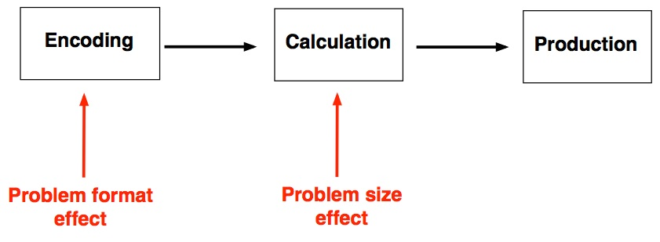
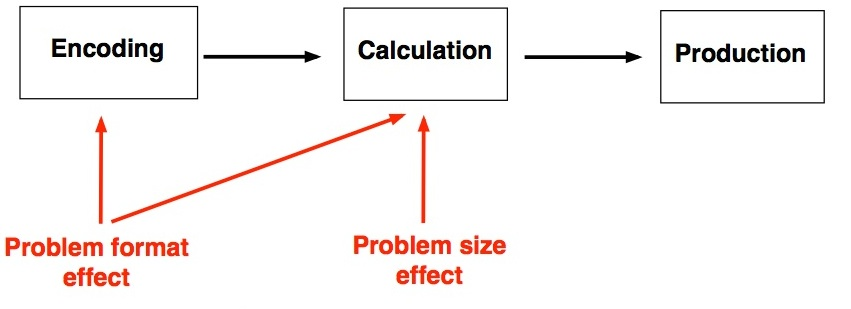

Week 12 lecture notes - PSYC 5301
Review discussion from Week 11
Last week, I asked each student to find an interesting result in the literature and compute a default Bayes factor (using JASP). We discussed each of these examples from their discussion board in class.
Student presentations of their analyses of Lab 2 data
Also, I asked each student to begin playing with the Lab 2 data (arithmetic task) in JASP. We discussed these preliminary analyses in class.
Review of factorial designs
- factors - another name for independent variable
- ex: test mode
- levels - the values each factor can take
- ex: test mode has two levels: visual, auditory
- an N x M factorial design has two factors; the first with N levels and the second with M levels
- Example: in our previous study, we had a 2 x 2 design.
- Example: consider a 2 x 4 design:
| B1 | B2 | B3 | B4 | |
|---|---|---|---|---|
| A1 | ||||
| A2 |
The number of conditions is calculated by multiplying the numbers of levels, so a 2x4 design has 8 conditions.
Anatomy of a 2x2 design
| A1 | A2 | ||
|---|---|---|---|
| B1 | condition mean A1B1 | condition mean A2B1 | marginal mean B1 |
| B2 | condition mean A1B2 | condition mean A2B2 | marginal mean B2 |
| marginal mean A1 | marginal mean A2 |
- if marginal means differ, this is called a main effect
- if pattern in one variable changes across the levels of the other, this is called an interaction
Advantage of factorial design
If you have only one independent variable, there are only two possible outcomes: there is an effect, or there is not
If you have TWO independent variables, things are much more interesting!
Let
- A = main effect of factor A
- B = main effect of factor B
- AB = interaction of A and B
Then there are EIGHT possible outcomes:
- No effects at all
- A only
- B only
- AB only
- A and B, but not AB
- A and AB, but not B
- B and AB, but not A
- A, B, and AB
Examples of 2x2 designs
For each of the following:
- compute the marginal means
- plot the means
- decide whether the main effects and/or interactions are significant
| A1 | A2 | |
|---|---|---|
| B1 | 30 | 60 |
| B2 | 30 | 60 |
| A1 | A2 | |
|---|---|---|
| B1 | 60 | 60 |
| B2 | 30 | 30 |
| A1 | A2 | |
|---|---|---|
| B1 | 60 | 30 |
| B2 | 30 | 60 |
| A1 | A2 | |
|---|---|---|
| B1 | 30 | 60 |
| B2 | 30 | 30 |
Lab 2 manuscript assignment
Background
Independent variables:
- Problem size
- small: product less than or equal to 25
- large: product greater than 25
- within-subjects manipulation
- Format
- digits
- words
- within-subjects manipulation
Dependent variables:
- number of problems completed (correctly)
- related to RT (as RT decreases, # problems increases)
- number of errors
Past research:
- problem size effect
- small problems faster than large problems
- small problems less error prone than large problems
- format effect
- digit problems faster than large problems
- digit problems less error prone than large problems
The point of our experiment is to examine whether problem size and format interact
Additive model of arithmetic (Dehaene and Cohen, 1995)

In this model, format effects are isolated only to encoding processes.
Interactive model of arithmetic (Campbell, 1999)

In this model, format affects both encoding AND calculation.
The critical test between these two models is whether there is a format x problem-size interaction! This is completely testable in our experiment! Your task is to test this prediction and arbitrate between these two competing models of mental arithmetic.
due dates:
- IRB assignment: due Tuesday, April 25
- Lab 2 manuscript: due Tuesday, May 9